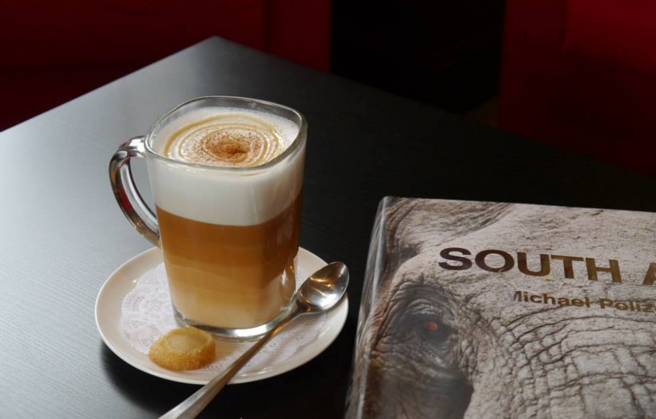

PREV
NEXT
Cederberg Tea House, named after the region in the world where Rooibos Tea naturally grows, began as a mother-daughter catering company. After catering Natasha’s own wedding, we realized how much joy it would give us to bring the art of tea and the beauty of our country to the Seattle area, so we started catering and sharing our passion for tea and South African treats. We have now opened a brick and mortar location in Upper Queen Anne. Come and have a cup of tea and try some of our South African specialties.
For the love of tea,
Cecile and Natasha